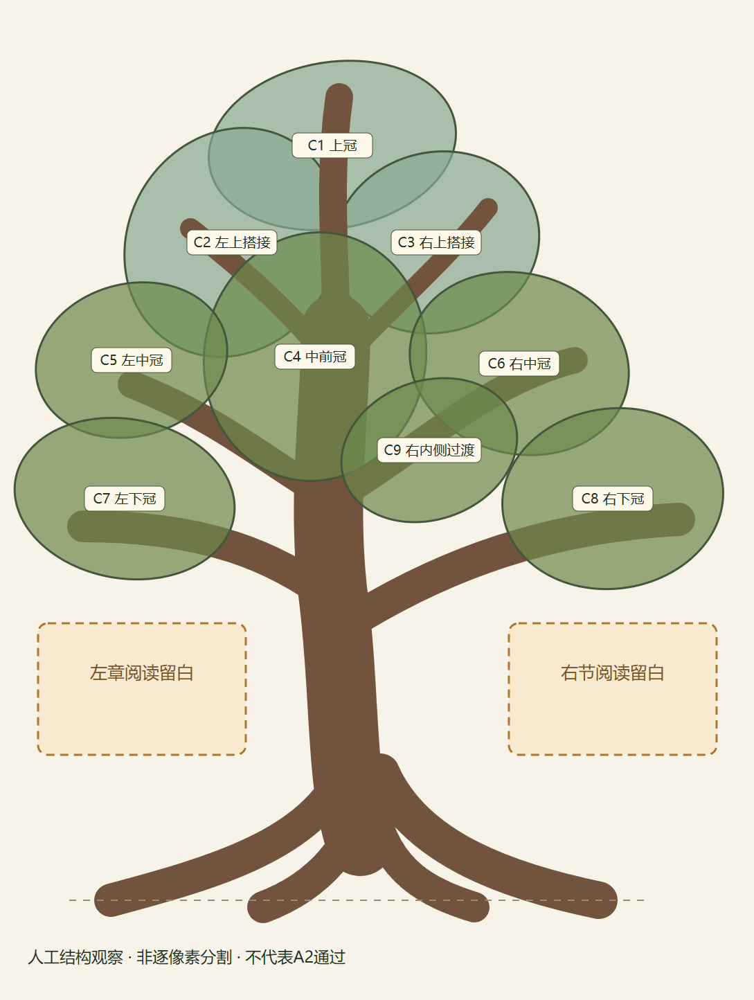
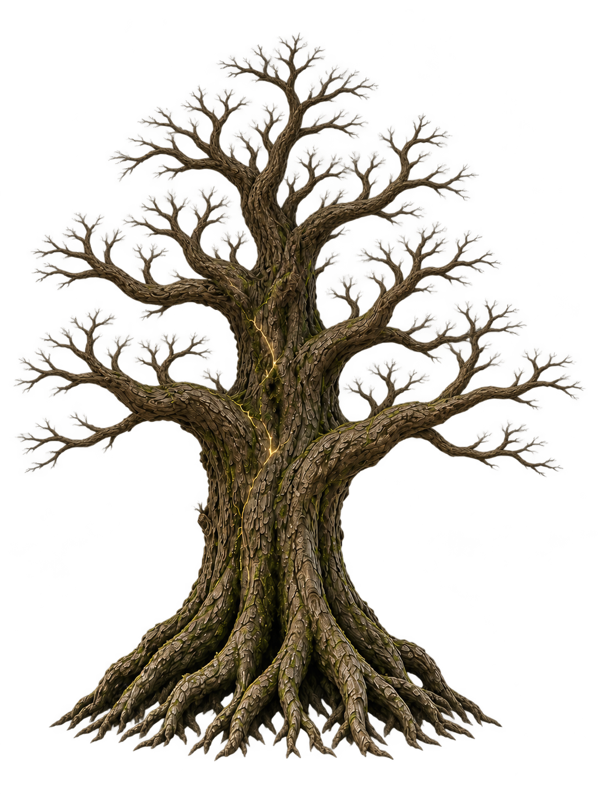
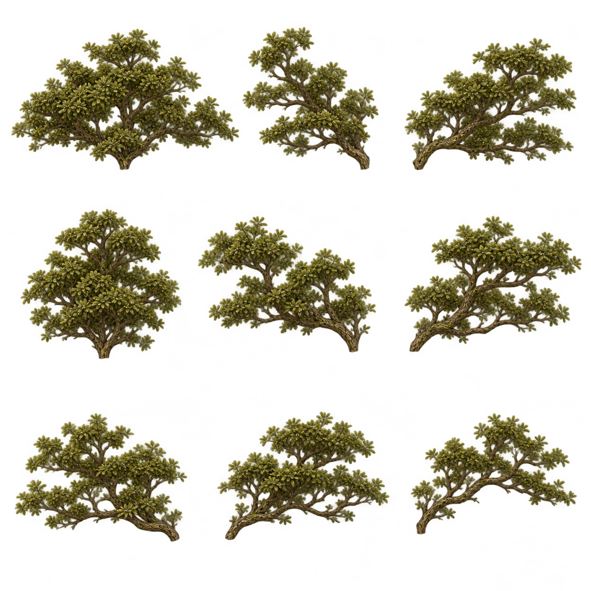
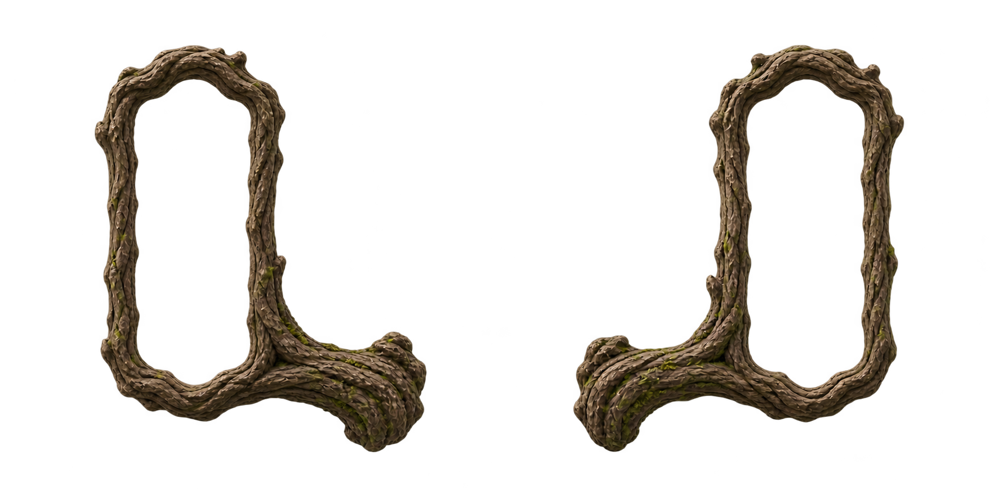

当前A2未通过。这里是结构引导和美术源稿，没有新运行时四图或成长短片。六套旧完整方案的拒绝结论保留。
新木体的幼态木纹、根尖、九冠簇遮挡和真实端口尚未验证。枝牌空窗检查矩形仍有7个alpha=1像素，未记为完全透明通过。
完整记录 · 尺寸、哈希及源审计 · 可编辑构图JSON




工具：内置image_gen。源稿未做本地像素编辑，结构示意由独立SVG代码生成。
实际提示词：wood · canopy · frames · 木框透明提取